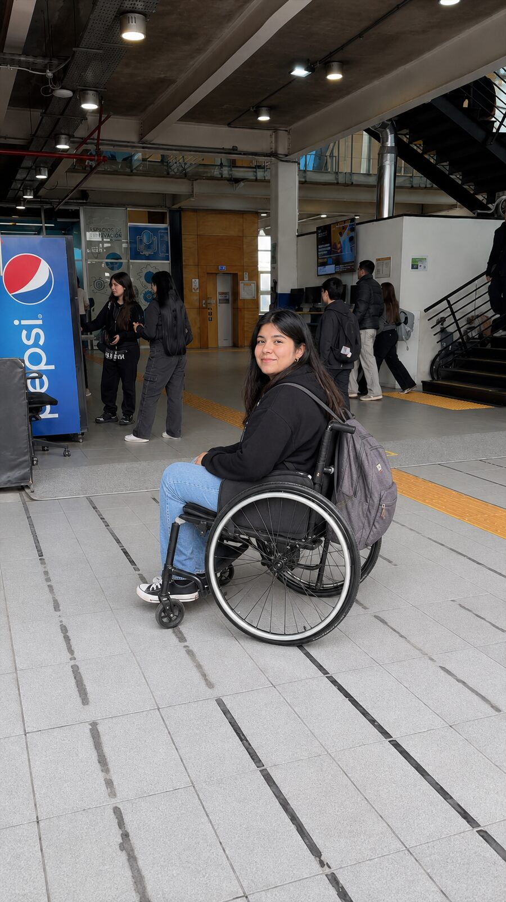
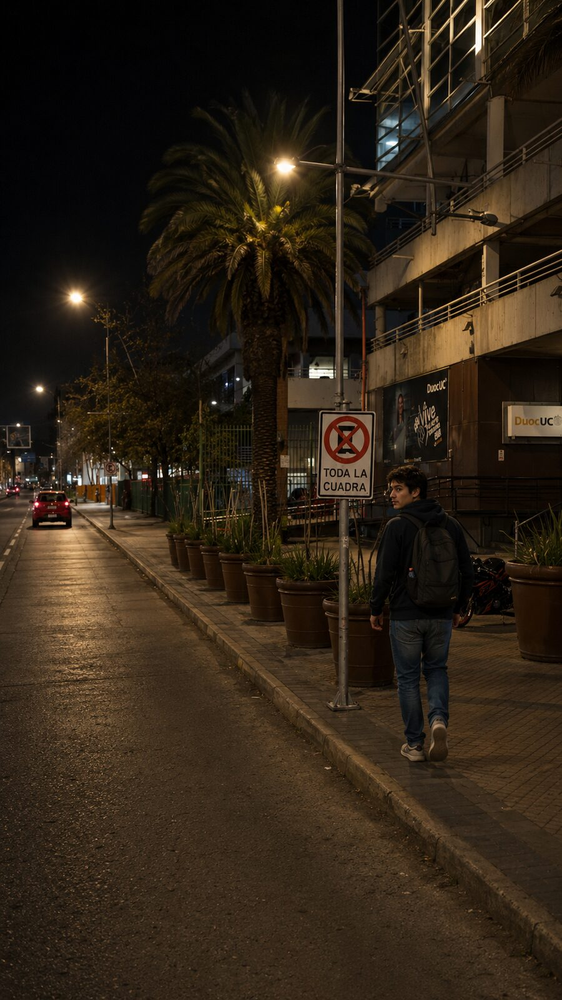
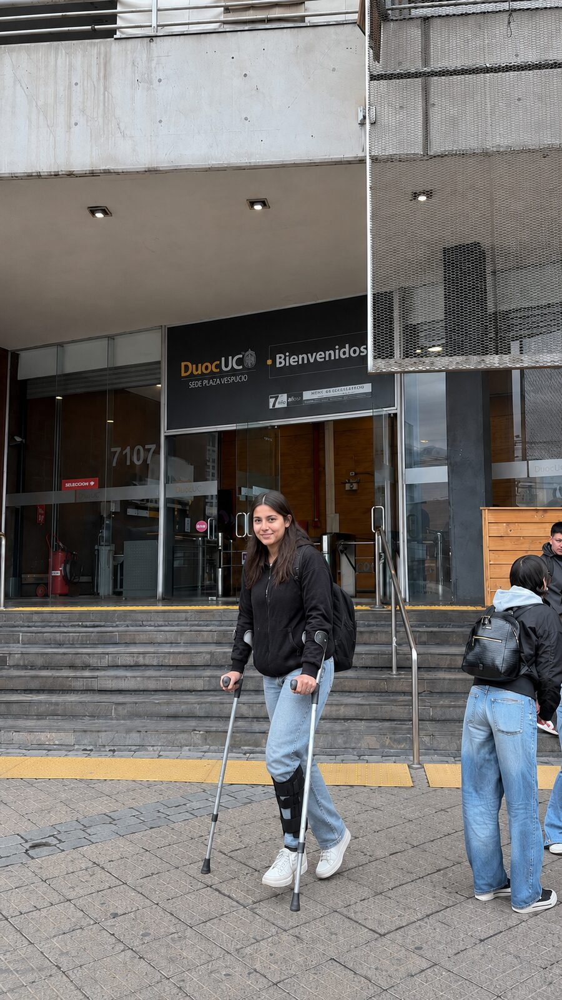
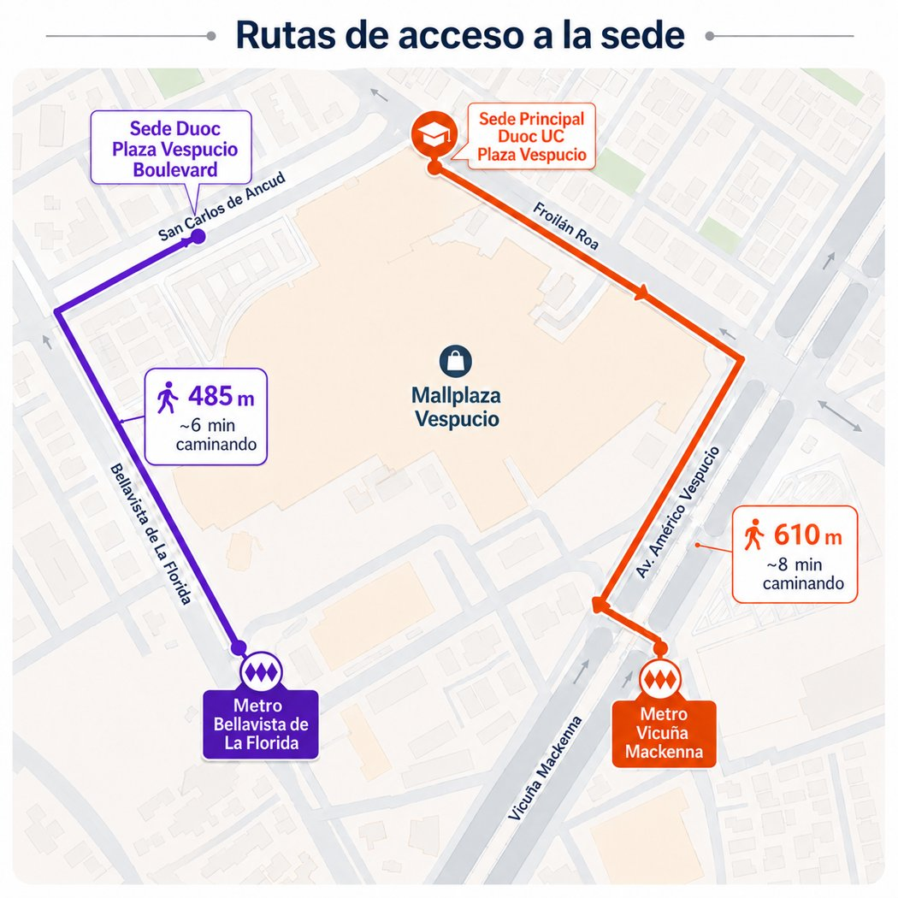
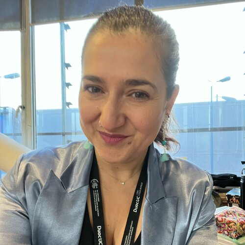
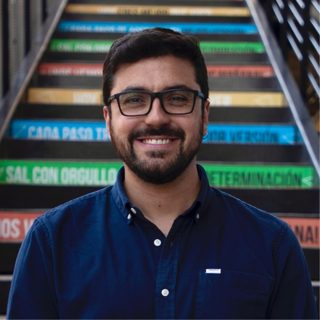
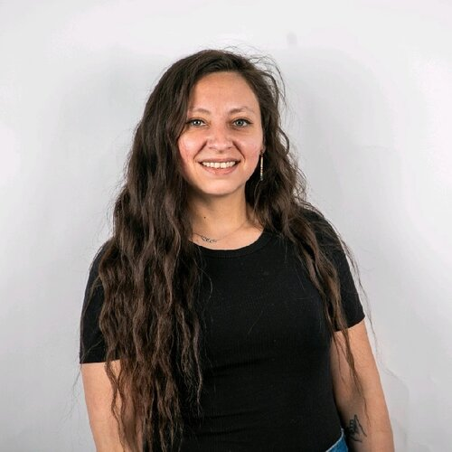
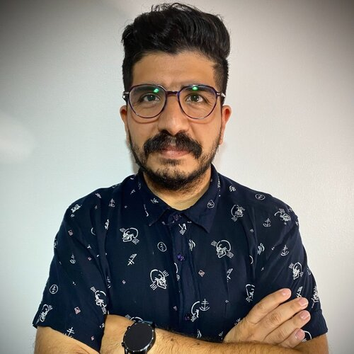

El ascensor del Metro, días sin servicio.La cargaron desconocidos por las escaleras.
Te Cuido PV
Para que ningún estudiante enfrente solo su trayecto.
Duoc UC · Sede Plaza Vespucio
Comité de Innovación Corporativa · ICORP 2026

El ascensor del Metro, días sin servicio.La cargaron desconocidos por las escaleras.

Con muletas, camino a la sede.Cayó, se golpeó y la auxiliaron transeúntes.

Cada noche, de vuelta al Metro.Estudiantes vespertinos caminan solos.
En cada caso, la ayuda estaba cerca. Pero nadie sabía que era necesaria.
A minutos de la sede, todos los días

El acompañamiento institucional termina en la sede.
La vulnerabilidad continúa en el trayecto.
Accidentes · barreras de movilidad · crisis de pánico · acoso · trayectos nocturnos. No buscamos hacernos cargo de la seguridad del sector: buscamos ampliar la capacidad de acompañamiento de la comunidad.
Encuesta a 462 estudiantes y colaboradores de la sede
No recibió apoyo institucional de quienes vivieron un riesgo
Sí estaría dispuesto a ayudar a otro estudiante
Sobre 462 respuestas de la comunidad.
La misma cifra que muestra la brecha muestra también la solución: la comunidad ya quiere ayudar.
La comunidad quiere ayudarse.
Solo necesita una forma de conectarse.
La red ya existe. Solo falta activarla.
No estamos construyendo una app. Estamos construyendo una red de cuidado comunitario.
Conecta a quien necesita apoyo con personas de su propia comunidad que están cerca.
Antes
“Estoy solo y no sé a quién acudir.”
Te Cuido PV
“Activo una solicitud y mi comunidad puede responder.”
Después
“Recibo acompañamiento.”
La tecnología activa la conexión; la comunidad entrega el cuidado. No reemplaza servicios de emergencia ni protocolos institucionales.
Un gesto activa la red de cuidado.
Y alrededor: Caminemos Juntos, mapa seguro, consejeros y embajadores, recursos y reportes. Todo, partes de una misma red.
[VIDEO: prototipo de Te Cuido PV]
¿La comunidad responderá cuando un estudiante necesite apoyo?
No basta con saber si la aplicación funciona. Necesitamos comprobar si la comunidad se activa.
Piloto de tres meses en Plaza Vespucio · comunidad estudiantil, consejeros y embajadores · trayectos reales.
sobre los registrados · 300+ esperados
por la comunidad
tiempo promedio
medición pre y post
El éxito no se mide en descargas. Se mide en respuesta.
Una inversión para validar el piloto y generar evidencia institucional.
$3.612.000Pesos chilenos · total solicitado
Prototipo estable para uso real.
Comunidad informada, capacitada y dispuesta a participar.
Alertas, ubicación, trazabilidad y continuidad.
Qué gana Duoc UC
La aplicación es el vehículo. El resultado es una comunidad que sabe cuidarse.
Si el piloto funciona, Duoc UC no obtiene solo una aplicación: obtiene evidencia para construir un modelo de cuidado replicable. No prometemos escalamiento automático.
Solicitamos validar Te Cuido PV con un piloto de tres meses en Plaza Vespucio.
$3.612.000
No estamos solicitando solo recursos.
Estamos solicitando la oportunidad de transformar cercanía en cuidado.
No decimos “ten cuidado”.
Decimos “te cuido”.
El equipo

Frida GuzmánDirectora de Carrera
Felipe SandovalAsuntos Estudiantiles
Andrea FloresEstudiante · consejera
Diego GarcésDocente de InformáticaCon el apoyo de Renato Alfaro y Benjamín Morales, estudiantes de Informática.
| Indicador | Resultado |
|---|---|
| Respuestas (estudiantes y colaboradores) | 462 |
| Ha vivido una situación de riesgo | 27% |
| De esos casos, sin apoyo institucional | 87% |
| Considera que sería una herramienta clave | 97,2% |
| Descargaría y usaría la aplicación | 92% (9 de cada 10) |
| Dispuesto a ayudar a otro estudiante | 87% |
Levantamiento cuantitativo y cualitativo. Metodología: entrevistas, observación en terreno y encuesta.
| Partida | Tipo | Monto (CLP) |
|---|---|---|
| Diego Garcés · coinvestigador · 60 h | Bono docente | $1.259.880 |
| César Burgos · coinvestigador · 60 h | Bono docente | $834.840 |
| Difusión institucional (campaña, QR, activación) | OPEX materiales | $930.000 |
| Amazon RDS PostgreSQL (Multi-AZ) | OPEX software | $316.200 |
| AWS Application Load Balancer | OPEX software | $116.250 |
| AWS Fargate (ECS) | OPEX software | $83.700 |
| Amazon Location Service | OPEX software | $23.250 |
| Amazon S3 & SNS | OPEX software | $23.250 |
| Registro de dominio · Route 53 & SSL | OPEX software | $24.630 |
| Subtotal RRHH · Subtotal OPEX | $2.094.720 · $1.517.280 | |
| Total | $3.612.000 | |
Frida Guzmán figura como líder sin bono ($0). César Burgos participa como coinvestigador (no es parte del equipo expositor). Aporte DIAIT $0 · Escuela/Sede $0 · CAPEX $0.
| Categoría | Qué habilita | Monto | % |
|---|---|---|---|
| Equipo técnico y desarrollo | Prototipo estable para uso real | $2.094.720 | 58,0% |
| Difusión y activación | Comunidad informada y dispuesta a participar | $930.000 | 25,7% |
| Infraestructura tecnológica | Alertas, ubicación, trazabilidad, continuidad | $587.280 | 16,3% |
| Total solicitado | $3.612.000 | 100% | |
Valores tomados sin modificación de la maqueta presupuestaria ICORP. El desglose línea a línea está en el Anexo 2.